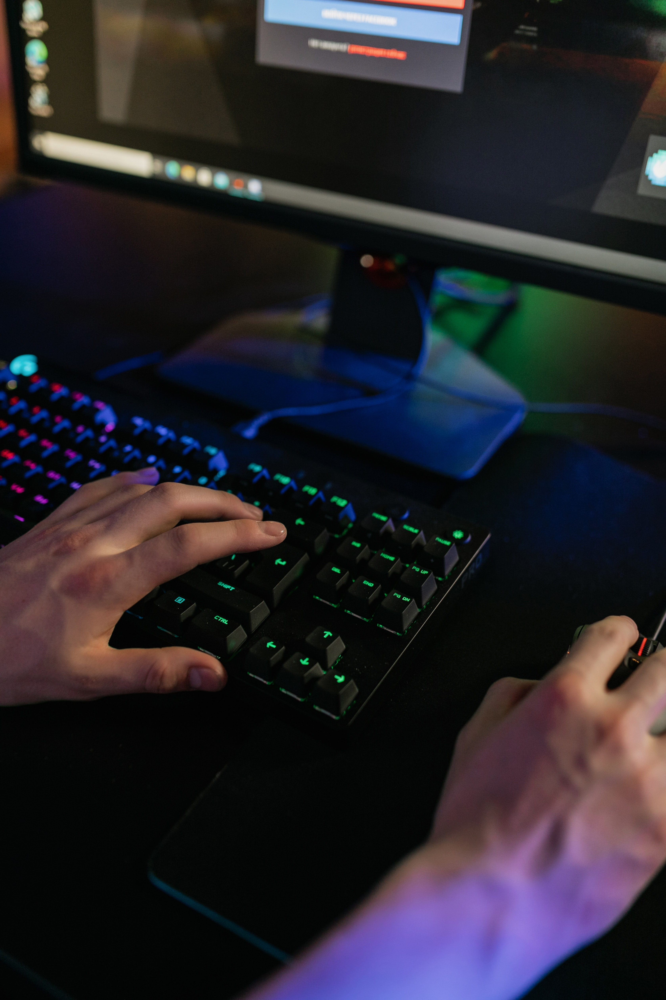

Performance Tests: How to Flex Your PC's Muscles
So you've built your own PC, and now you're wondering, "Can it run Roblox?" Fear not, dear builder, for we have the ultimate guide to testing your PC's performance. Let's find out if your newly-assembled beast can break the sound barrier or if it's just a glorified potato!
How to Test Performance:
Step 1:
Install all necessary drivers for your components, such as the GPU, CPU, motherboard, and storage devices. Make sure they're up to date for peak performance.Step 2:
Download and install benchmarking software for various components, like CPU, GPU, RAM, and storage devices. Variety is the spice of life, and benchmarking too!Step 3:
Run a series of benchmark tests to evaluate the performance of your PC components. Here are some reputable websites that offer benchmarking software or online services:Step 4:
Monitor your system temperatures and component usage during testing using monitoring software like HWiNFO or HWMonitor. Keep an eye on those vital signs!Step 5:
Evaluate the benchmark results and compare them with expected performance levels for your components. Did your PC pass with flying colors?Step 6:
Test your system stability using stress testing tools, like Prime95 for CPU and FurMark for GPU. Can your build handle the heat?Step 9:
If you encounter any issues or discrepancies in performance, troubleshoot by checking for driver updates, BIOS settings, or hardware compatibility. Don't worry, we'll get to the bottom of this!Tip:
Keep your drivers and BIOS updated regularly for optimal performance and to avoid potential compatibility issues. Stay ahead of the game!